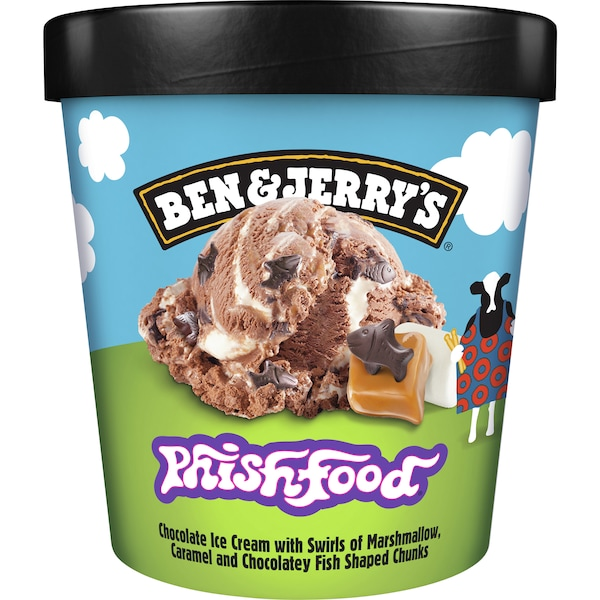

Ben & Jerry's
'Chocolate Fudge Brownie'
8.5/10

Ben & Jerry's
'Phish Food'
9/10

Ben & Jerry's
'Triple Caramel Chunk'
8/10

Ben & Jerry's
'Cookie Vermont-ster'
7/10

Ben & Jerry's
'Dulce De-lish'
8/10

Ben & Jerry's
'Chocolate Chip Cookie Dough'
7/10

Ben & Jerry's
'Half Baked'
7/10

Ben & Jerry's
'The Tonight Dough'
6/10